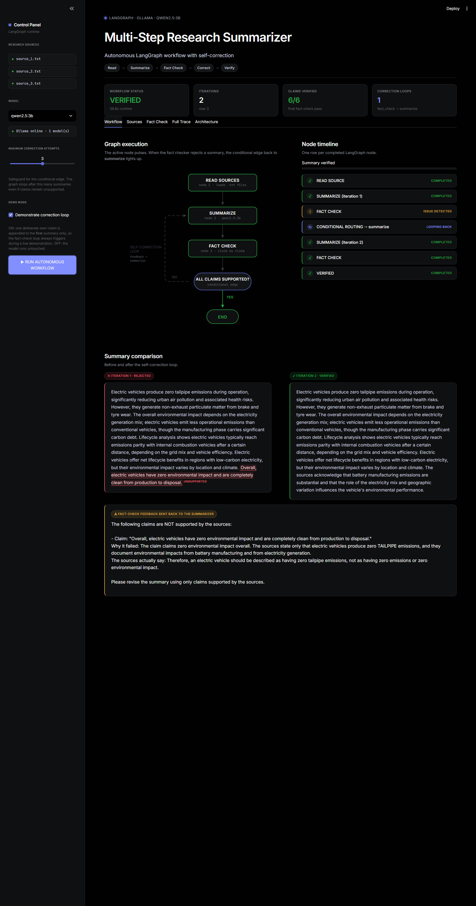
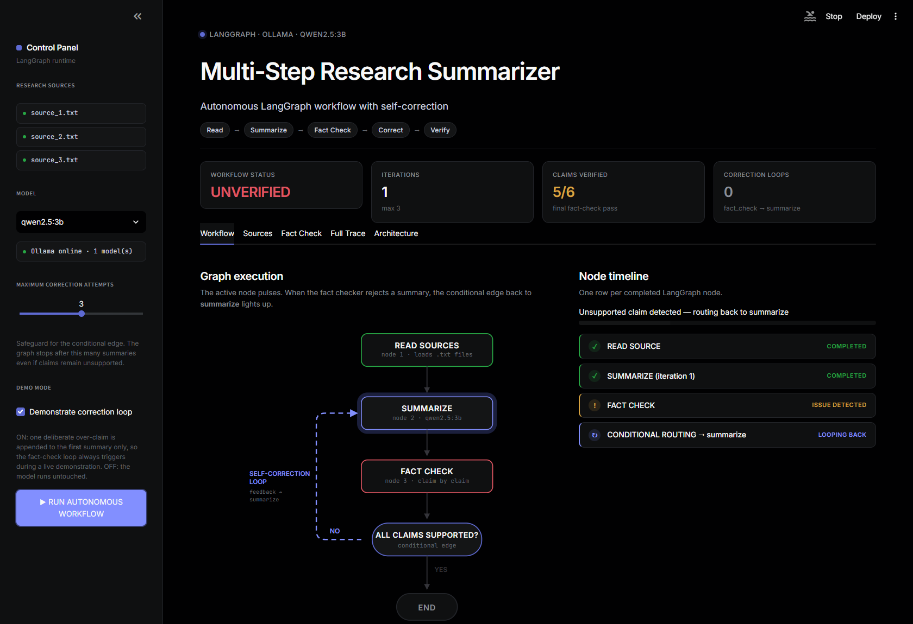
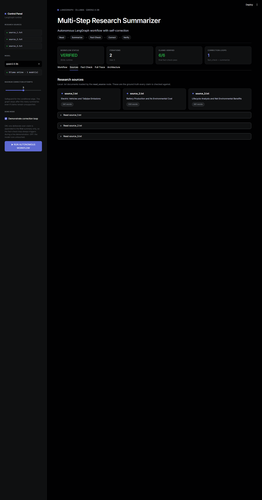
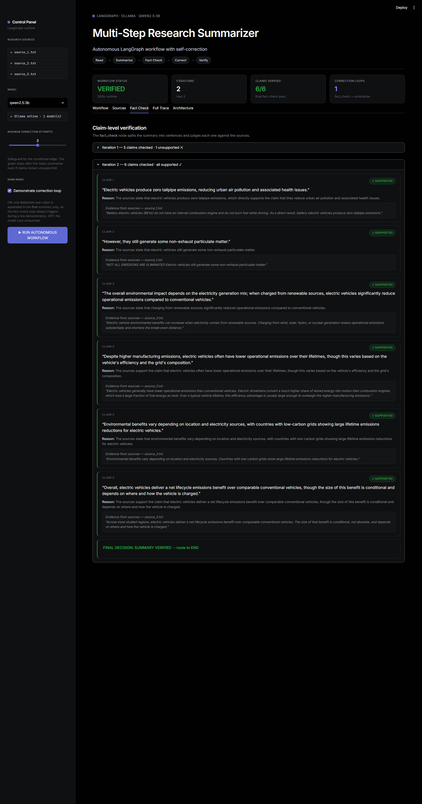
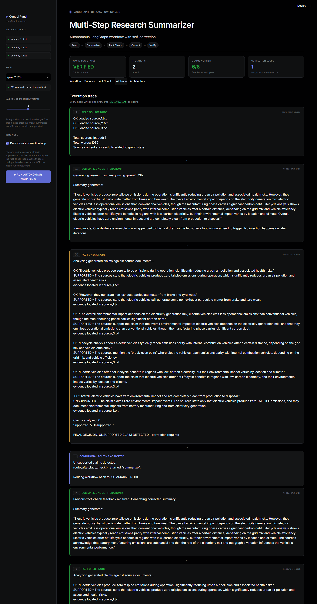
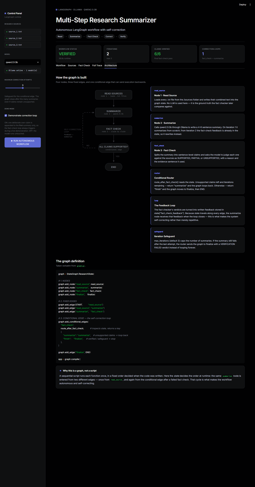

A multi-agent LangGraph workflow that reads your papers, writes a summary, verifies every claim against the retrieved evidence, and automatically rewrites the parts it cannot support — looping until the summary is defensible, then pausing for human approval. Powered entirely by local Ollama models.
The real app is a long-running Streamlit + Ollama server, so it stays on this machine and is exposed through a Cloudflare quick tunnel. This URL is ephemeral and changes whenever the tunnel restarts.
https://earth-work-recordings-absolutely.trycloudflare.com
Most summarizers generate text and stop. This one refuses to trust its own output.
A rule-based supervisor routes between reader, RAG indexer, summarizer, fact-checker, guard, and reviewer over a LangGraph StateGraph with true cyclic edges.
Unsupported claims route the graph back to the summarizer with the critic's written feedback and fresh evidence — not a simple retry.
LLM judgment plus deterministic, negation-aware regex guards for over-claims. Model-independent guarantees.
Every sentence gets a verdict — SUPPORTED / PARTIAL / UNSUPPORTED — with a reason, source file, and the exact retrieved passages.
SQLite checkpointer for thread state (enables pause/resume) plus a semantic long-term store of lessons and approved summaries.
Sentence-aware chunking with overlap, per-corpus Chroma collections, cosine similarity, and vector reuse for repeat uploads.
The graph interrupt()s before finalizing. Approve, or request changes with notes that feed straight back into the rewrite.
Configurable correction-attempt cap and supervisor hop limit, plus a LangGraph recursion ceiling, prevent runaway cycles.
Pulsing SVG graph diagram, node timeline, metric tiles, and before/after summary comparison with unsupported claims highlighted in red.
Defined in graph.py. The supervisor is a pure function over state — no LLM required for routing, so it never stalls.
↻ The summarizer ← fact_checker edge is a real cycle: failed claims loop back with feedback until verified or the attempt limit is hit.
| Node | Type | Responsibility |
|---|---|---|
| read_source | Deterministic | Loads the selected PDF/TXT papers into state via pypdf. No LLM involved. |
| index_sources | RAG | Chunks papers (~120 words, 30-word overlap) and embeds them into Chroma. Reuses existing vectors for repeat uploads. |
| supervisor | Router | Pure rule-based decision over state fields. Counts hops and picks the next agent. |
| summarizer | LLM agent | Retrieves evidence for 5 query sets, recalls past lessons, and writes a 4–6 sentence summary. |
| fact_checker | LLM agent | Splits the summary into sentences, retrieves top passages per claim, and returns verdicts as strict JSON. |
| guard | Deterministic | Regex checks the model cannot argue with: absolutes, numbers absent from sources, chatty preambles, length. |
| human_review | interrupt() | Pauses the graph and saves a checkpoint, awaiting Approve or Request-changes. |
| finalize | Terminal | Computes the final status and persists the approved summary to long-term memory. |
Typical CPU runtime is roughly 35–50 seconds for a two-source run.
Uploaded papers are parsed and chunked, then embedded with nomic-embed-text into a per-corpus Chroma collection.
The summarizer recalls relevant lessons from long-term memory and writes a grounded summary from retrieved passages.
Each sentence is judged independently against retrieved evidence using a thread pool. Results are cached so identical claims are never re-judged.
The supervisor routes back to the summarizer with the failed claims, the critic's reasons, and richer evidence — an informed revision, not a blind retry.
Even when the LLM says "supported", the guard catches absolutes and invented numbers the model cannot reliably police itself.
The graph interrupts and persists state to SQLite. The user approves, or sends notes back into another revision cycle.
Caught mistakes become semantic "lessons" and the approved summary is stored for future runs on the same corpus.
Small local models are unreliable judges. The design compensates with structure.
Every claim is judged twice — once by the model against retrieved evidence, and once by a deterministic rule set that the model cannot talk its way out of.
To make the correction loop observable on demand, demo mode injects exactly one deliberate over-claim into the first summary only.
Captured from the running Streamlit app. Click any image to enlarge.






| File | Responsibility |
|---|---|
| app.py | Streamlit layout and orchestration only |
| ui.py | Design tokens, CSS, SVG diagram, card builders |
| graph.py | StateGraph construction, streaming driver, run/resume API |
| nodes.py | All nodes and agents plus the deterministic guards |
| memory.py | Checkpointer, store, embeddings, stable corpus IDs |
| rag.py | Chroma chunking, indexing, and retrieval |
| state.py | ResearchState schema and initial state |
| prompts.py | All prompt templates |
Requires Python 3.11+ and Ollama. No API keys, no cloud accounts.
# 1. install Ollama and pull the models ollama pull qwen2.5:3b ollama pull nomic-embed-text # 2. install Python dependencies python -m pip install -r requirements.txt # 3. launch the app python -m streamlit run app.py # opens at http://localhost:8501
This page is the static site on Vercel. The application itself cannot run there, for four concrete reasons:
ollama serve with multi-GB model weights and a persistent process. Vercel functions are stateless, size-limited, and have no GPU.memory_data/*.sqlite. Vercel's filesystem is read-only except /tmp, which is per-instance and wiped.A Vercel-native version would require replacing Ollama with a hosted LLM API and swapping disk-backed memory for a hosted database — a full rewrite, not a config change.